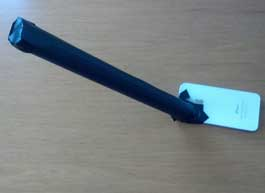

SpectraSnapp is an app designed to let you photograph the spectrum of any light source and compare it to spectra of various elements. If you are good, you can figure out what elements make up your light source.
The first step is to create a device, a spectroscope, which can break light from your light source into its various colors.
SpectraSnapp Spectroscope:
Materials:
- Diffraction grating: 500 or more lines per millimeter. (Rainbow or 'fireworks glasses' work well. Diffraction gratings can also be purchased here: http://www.sciencestuff.com/prod/P-c/0529-L
- Black construction paper
- Electrical tape, preferably black
Instructions:
- Cut a 1 cm by 1 cm square of diffraction grating.
- Determine the direction of the diffraction grating lines by holding it up to a light and seeing the direction of the rainbow you see. The lines of the diffraction grating are perpendicular to the rainbow.
- Some types of 'fireworks' glasses will produce rainbows in both directions. This won't affect how the spectrum is produced, but your photos will have a spectrum both horizontally and vertically. Continue to follow the directions as written.
- Tape the diffraction grating over the lens of the iPhone camera so that the lines of the diffraction grating are horizontal. Use black electrical tape and cover the grating so that only a small horizontal slit, around a millimeter thick, remains visible over the center of the lens.
- Cut the black construction paper into a rectangle that is 4.5 by 11 inches and roll it into a tube 11 inches long and roughly 1 inch or smaller in diameter. Tape the seam completely with black electrical tape. The length and black color of the tube allow less ambient light through to affect your results.
Cut one end of the tube at a slight angle.
- On the flat end of the tube use electrical tape to create a slit that is a millimeter or less in width. The smaller this slit, the better the spectrum.
- Attach the angled end of the tube over the lens of the iPhone with electrical tape allowing as little light in as possible. Make sure the slit in the end of the tube is in the same direction as the one covering the diffraction grating and lens.

- Turn on your iPhone's camera and point the slit on the end of the tube at a light source such as a light bulb or the sun. You should see a spectrum on your screen. You may have to move the tube around a bit to get the best picture.
- Snap a photo and see what kind of light source you have!
Tips and Tricks:
- Make sure that no light is getting in through the seal between the tube and the camera. Cover that seam completely with electrical tape.
- To get a good spectrum, make sure the slit at the end of the tube is pointed directly at the light source. If it's too bright and washed out, try aiming at a nearby wall to catch the reflected light. You may have to move the tube around a bit while keeping the camera still.
- Try many different light sources. Some of our favorites are colored party lights, LEDs, compact florescent blubs, neon signs, street lamps, the sun and lasers of various colors.